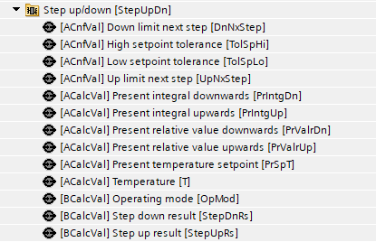
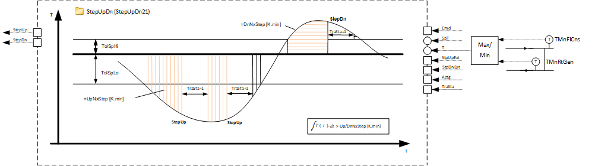
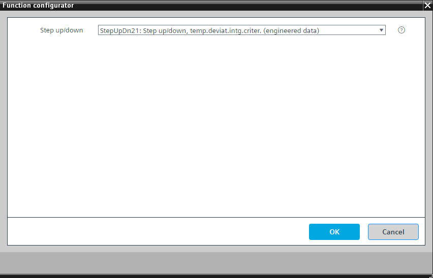

[StepUpDn21] Step up/down, temperature deviation integral criterion
Program block, name / node subtype: [StepUpDn21] Step up/down, temperature deviation integral criterion
Library hierarchy: Universal functions
Family: StepUpDn
Project tree | Diagram |
|---|---|
|
 |  |
Configurator


Program blocks are stored in the library without I/Os. Use the auto-create and auto-connect functions to create I/Os and/or to connect them to the interface blocks, e.g., R_A, CMD_B. Alternatively, take the I/Os from the folder containing the predefined I/Os in the library and/or from the plant and connect them to the interface blocks.
Function
Compares a temperature to a setpoint and generates impulse signals to demand more or less power.
A tolerance can be set up around the setpoint. If the temperature is outside of the tolerance and an evaluation criterion is met, an impulse is generated to demand more or less power.
There are two values for setting the tolerance. An asymmetrical tolerance around the setpoint is possible.
The evaluation criterion is the difference between the temperature and the outer limit for the tolerance integrated over the length of time. If the area of this deviation exceeds the switching limit, an impulse is generated. A switching limit generates an impulse for more power and another switching limit generates an impulse for less power.
The current deviation is divided by the deviation limit, multiplied by 100, and displayed with a value object that shows what percentage of the switching limit is reached.
After generating the pulse, an external logic increases or decreases the power and activates the input of the program block (TraSta), which indicates that the external logic is in a transition state. During this transition state, the evaluation logic stops.
Mandatory elements
Name | Description | Type | Alarm / Notification class | Trend / Type | |
|---|---|---|---|---|---|
|
DnNxStep | Down limit next step | ACnfVal: Analog configuration value | N/A | No | |
TolSpHi | High setpoint tolerance | ACnfVal: Analog configuration value | N/A | No | |
TolSpLo | Low setpoint tolerance | ACnfVal: Analog configuration value | N/A | No | |
UpNxStep | Up limit next step | ACnfVal: Analog configuration value | N/A | No | |
Nz | Neutral zone | ACalcVal: Analog calculated value | No | No | |
PrIntgDn | Present integral downwards | ACalcVal: Analog calculated value | No | No | |
PrIntgUp | Present integral upwards | ACalcVal: Analog calculated value | No | No | |
PrValrDn | Present relative value downwards | ACalcVal: Analog calculated value | No | No | |
PrValrUp | Present relative value upwards | ACalcVal: Analog calculated value | No | No | |
PrSpT | Present temperature setpoint | ACalcVal: Analog calculated value | No | No | |
T | Temperature | ACalcVal: Analog calculated value | No | No | |
OpMod | Operating mode | BCalcVal: Binary calculated value | No | No | |
StepDnRs | Step down result | BCalcVal: Binary calculated value | No | No | |
StepUpRs | Step up result | BCalcVal: Binary calculated value | No | No | |